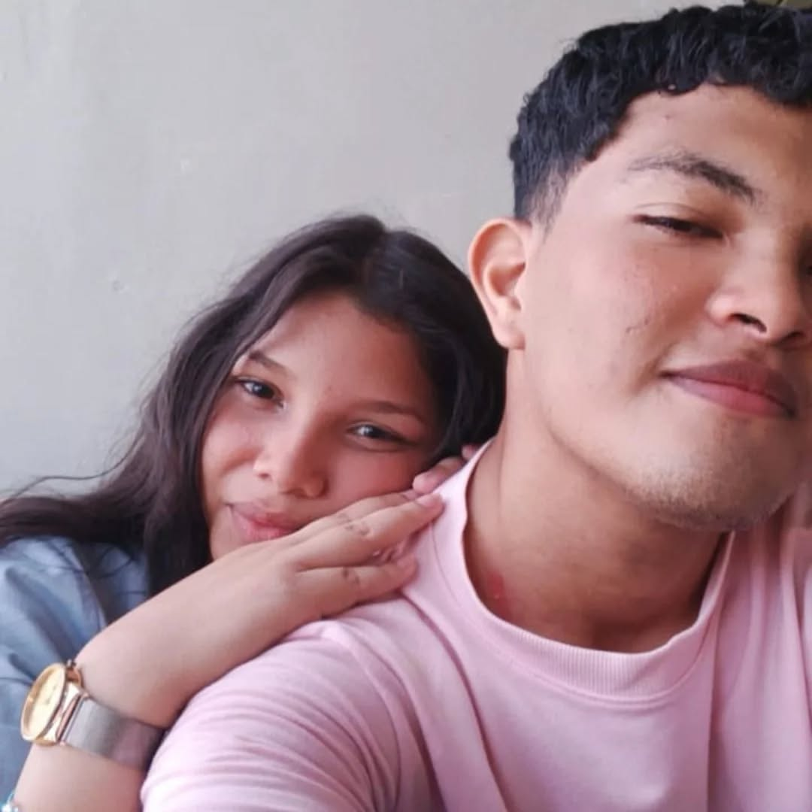
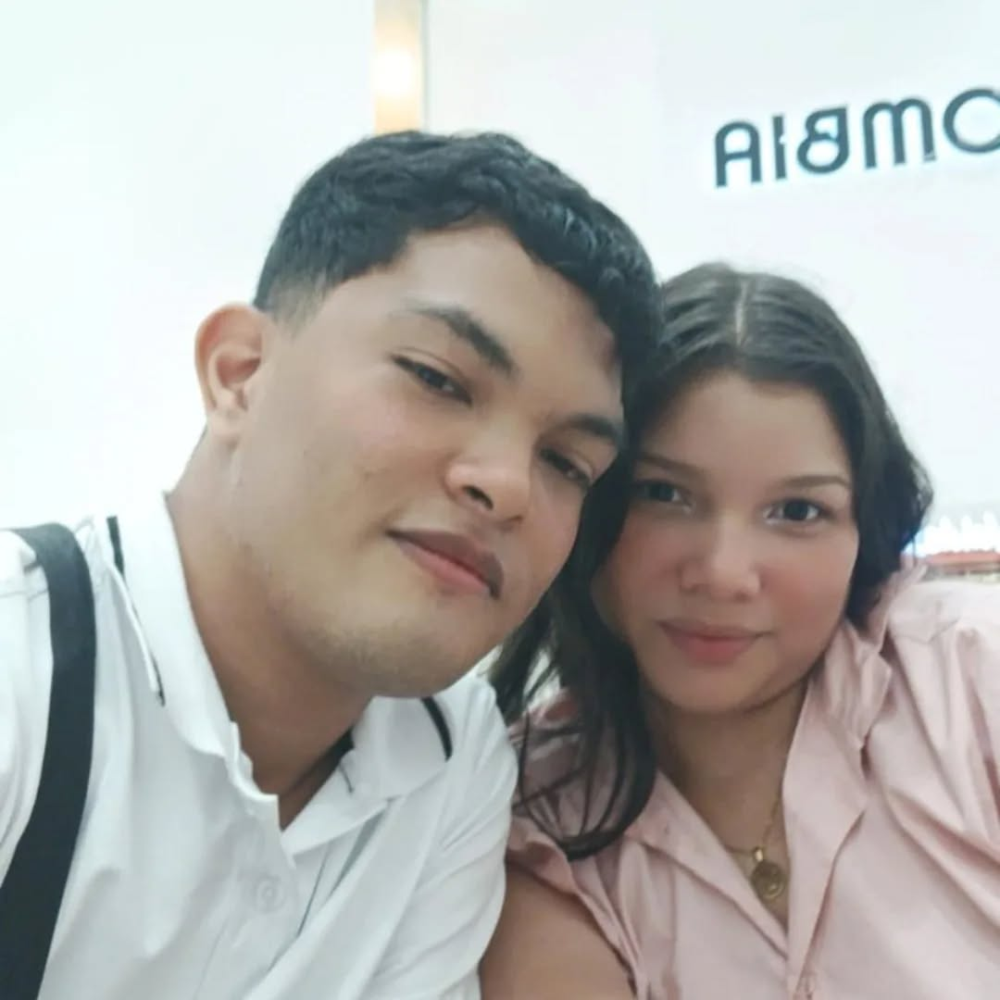
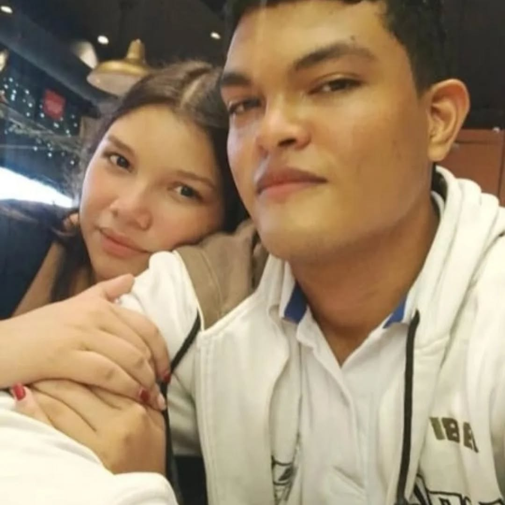

Fiorella & Reinaldo ❤️
Nuestro rinconcito en la web

Llevamos juntos
2 meses 💘
Desde el 24/11/2025
Nuestro rinconcito en la web

Llevamos juntos
2 meses 💘
Desde el 24/11/2025
Una reflexión sobre nosotros


A menudo pensamos que las grandes historias de amor se miden por la ausencia de problemas, cuando en realidad se definen por la capacidad de superarlos. En los momentos de crisis es fácil dejarse llevar por el cansancio, por el orgullo o por la falsa idea de que soltar es más sencillo que reparar. Sin embargo, cuando me detengo a mirar lo que hemos construido, me doy cuenta de que lo nuestro no es algo que deba arrojarse al viento a la primera tormenta.
Luchar por una relación no significa aferrarse a la comodidad ni ignorar los errores; significa reconocer que dos personas imperfectas pueden elegir seguir aprendiendo la una de la otra. Las heridas, los desencuentros y la distancia no siempre son el anuncio de un final, sino la señal clara de que la dinámica que llevábamos necesita evolucionar. Lo fácil es marcharse cuando el camino se vuelve empinado; lo valiente, lo verdaderamente valioso, es sentarnos a hablar con la verdad en la mano, desarmar los reproches y preguntarnos si el amor que nos unió sigue teniendo la fuerza para transformarnos.
La motivación no surge de la nada ni de la ilusión de un futuro perfecto. Nace del respeto hacia nuestra historia, de la complicidad que hemos compartido y de la certeza de que los momentos difíciles son pasajeros si el compromiso es mutuo. No busco que mágicamente todo se solucione hoy, ni pretendo ignorar lo que nos ha dolido. Lo que propongo es la madurez de no rendirnos sin haber dado lo mejor de nosotros.
Si en el fondo de este proceso aún existe el deseo sincero de coincidir, vale la pena bajar la guardia y volver a intentarlo. No para repetir los mismos errores, sino para reconstruirnos sobre bases más sólidas, más humanas y más reales. Al final, las relaciones más fuertes no son las que nunca se rompieron, sino las que supieron sanar juntas.